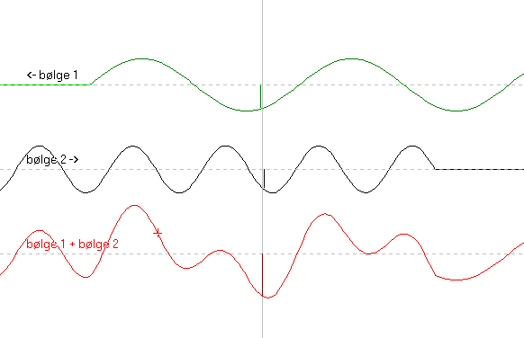

Interferens mellem to bølger der passerer hinanden.

Bølge 1 kommer fra højre og bølge 2 fra venstre. Nederst ses interferensmønstret.
Man kan ændre på bølge 2's bølgelængde og amplitude og man kan vælge forskellige måder at tegne interferensbilledet på.
Hvad er bølgelængde og hvad er amplitude?
Korset på den røde interferensbølge nederst skal forestille et legeme fæstnet til snoren, eller hvad bølgen nu udbreder sig i.
Hvad sker der med korset, når bølger udbreder sig?
I midten af billedet er tegnet udsving y1 og y2 for bølge 1 og 2.
Hvad gælder der om udsvinget af den resulterende bølge?